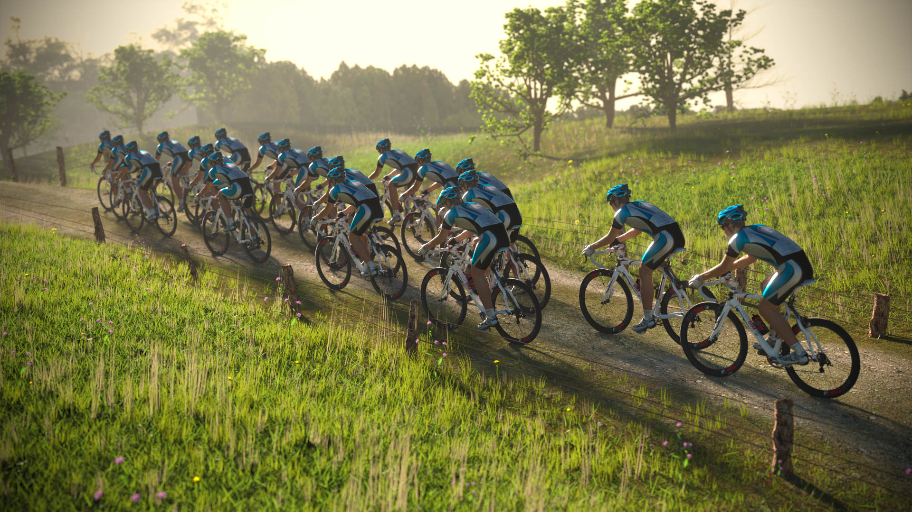
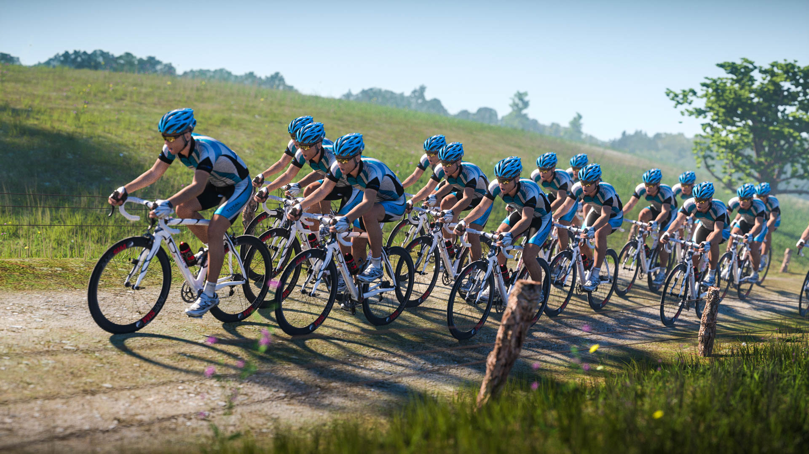

Bike Race
For this project I was only provided the bike models and had to create and deliver a photorealistic environment to go with the bikes.
I started with a dark 'studio' environment but the client decided on a more realistic environment. So I got to work recreating a french countryside backdrop.
A lot of the time was spent on creating all vegetations that scatter the landscape, including:
- 3 Grass layers
- 4 Weed layers
- 2 Flower layers
This scene pushed the limit of GPU rendering on my 4GB GTX770. It had trouble fitting all the grass and cyclists(instanced) into graphic memory for fast rendering. In the end, particle numbers were reduced for preview rendering, with final rendering done on the CPU.
The focus of the project is delivering a photo-realistic rendering of the scene in the most flattering lighting possible. Using Blender and Cycles Renderer allowed me to rapidly setup complex nodal materials as well as experimenting with lighting setups.
